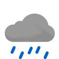

Weather
Germersheim 17.6-27.8
17.6-27.8

17.6-25.9 Wed

16.2-30.9 Thu

21.0-28.9 Fri

17.7-26.9 Sat

19.9-27.9 Sun

20.4-30.0 Mon

21.3-30.0 Tue

18.3-28.5 Wed

19.7-28.3 Thu
Erlabrunn 12.0-22.7
12.0-22.7

10.5-17.5 Wed

9.5-21.5 Thu

16.0-22.5 Fri

14.1-16.2 Sat

13.5-21.3 Sun

16.8-23.8 Mon

15.9-23.4 Tue

11.5-20.5 Wed

15.8-18.7 Thu
Schmilka 15.7-25.8
15.7-25.8

14.0-22.5 Wed

11.5-24.7 Thu

17.0-29.3 Fri

18.3-20.0 Sat

16.5-23.8 Sun

16.6-27.2 Mon

18.7-28.5 Tue

14.2-21.4 Wed

14.5-24.5 Thu